Ashford Parish Church - Gallery.
Here you will find many pictures of the Church in olden time, and will see from this how we can preserve what is left, and recreate the great aspects of the past which drew large congregations, and put Ashford Church truly at the 'Heart of the community'. Sadly, at present, this statement could not be further from the truth, with the syncretist agenda including ripping out the pews and thereby attempting to allow all sorts of irreverent practices, services and activities to take place.
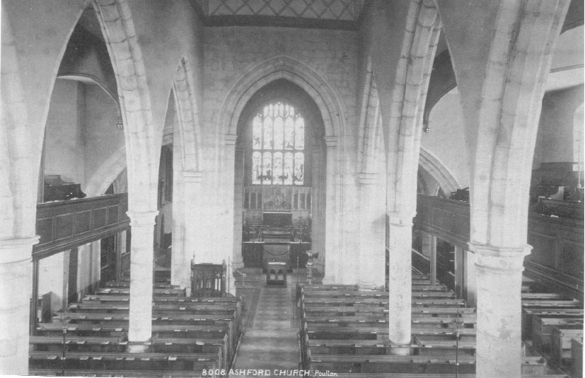Interior of the Church in the late 19th century. Note that it is all well pewed and tidy. The Rood screen would not be added until after the Great War. Also, a wooden reading desk is present; the present grand stone one not yet having been added. Note the Lectern is in the place it continued to occupy until 2005 when it was sidelined to the South side of the South-West pillar.
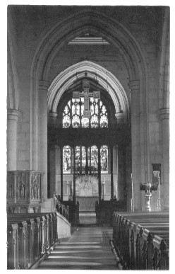
Interior of the Church about 1930. The stone pulpit is clearly visible, and the Rood screen and cross has been added.
Note also that the pews run right up to the Pulpit and Lectern as they should. This arrangement remained until 1999.
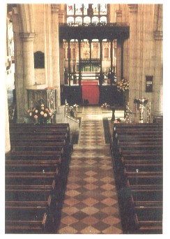
It is not our policy to permit many colour photographs on this site, but it was felt this is one of those which should be included. This is the interior of the Church in the late 1970's. In 1985 toilet and meeting room facilities were added at the back of the Church. There can be little objection to that. However, the wisdom of removing the font from under the West Gallery to its current position near the South West pillar of the Chancel front is very questionable.
It is worth noting that there have been a number of occasions on which the church has suffered removal of pews. Firstly in June 1958 came the removal of pews (by Faculty) from the North Transept (out of view on the left of the above picture). These pews were supposed to be retained in the Church or Church Hall according to the wording of the faculty, but I can find none of those in existence today. Then in October 1969 a Faculty was applied for to remove all the pews from the Strangford-Smyth Chapel (to the right of the picture). Chairs replaced these pews and the Chapel was rededicated as the Chapel of St Francis, to the memory of the late Harry Knock. In 1985 when the West-End of the church was reordered, some pews were removed from there and disposed of. Then in 1999the pews and runners at the front of the Nave on each side were removed on a Temporary Licence granted by the Archdeacon at the time. It appears that this Licence only covered a two-year period, but it is now ten years since that work was undertaken. The removal of the front pews and front runners on each side, which now allows for a hideous nave altar (the Altar which was formerly in the St Francis Chapel) to be used is abhorrent. We wish for the Temporary (since 1999!) Licence to be revoked especially as it seems to have run well past its intended date, the Nave altar removed, and the front pews and runners replaced.
It must be stressed that the removal of pews from the front of the Nave has resulted in a very odd and messy look, and paved the ways for liberalism in the liturgy. As long as the good fight is won to keep all the existing pews in the Nave, and replace the front ones which have currently been moved (ONE OF WHICH H.M. QUEEN ELIZABETH II OCCUPIED DURING THE '500TH ANNIVERSARY SERVICE OF THE DEDICATION OF THE CHURCH' IN 1970) to the Strangford-Smythe Chapel on temporary Licence.
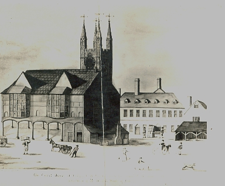
Ashford Parish Church long years ago in the 1700's

The Ashford Parish Magazine cover 1892

Ashford Parish Church Choir with Canon Tindall (1888-1914)
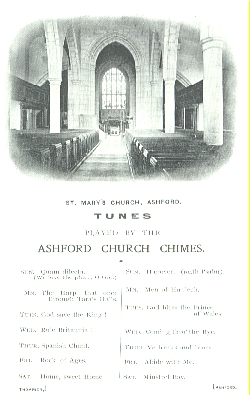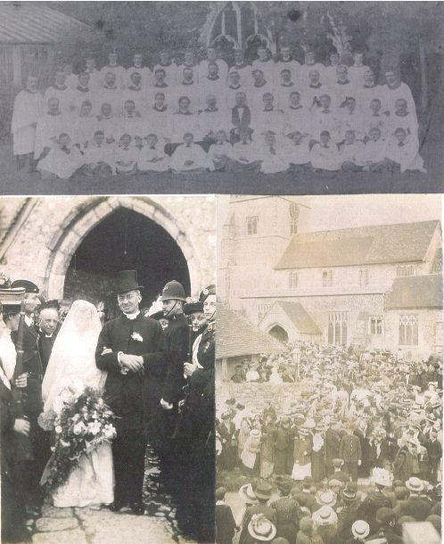
The
Ashford Clock Carrilon
Canon
Tindall's Wedding at Great Chart Church - note the huge gathering
outside
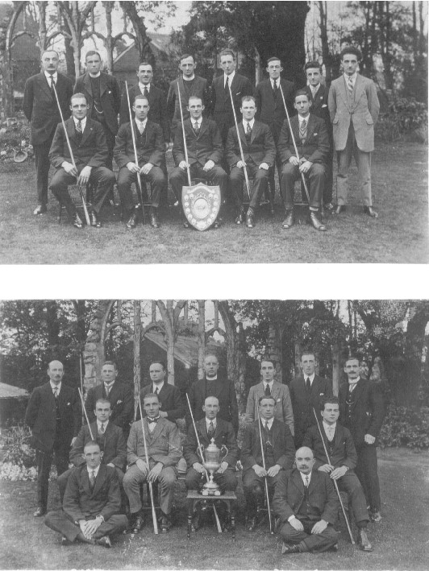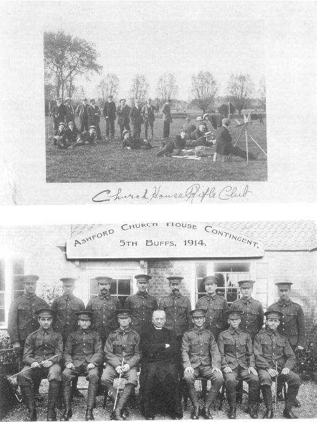
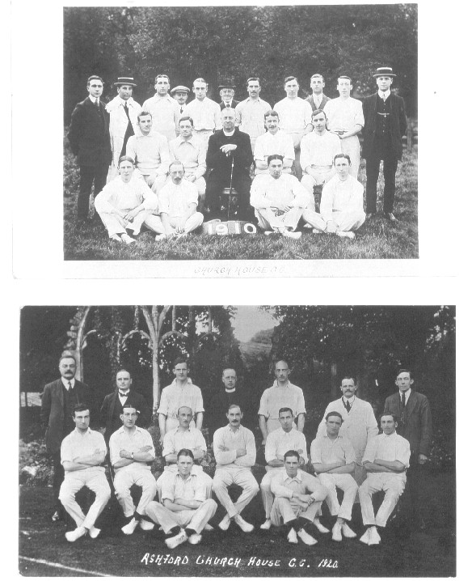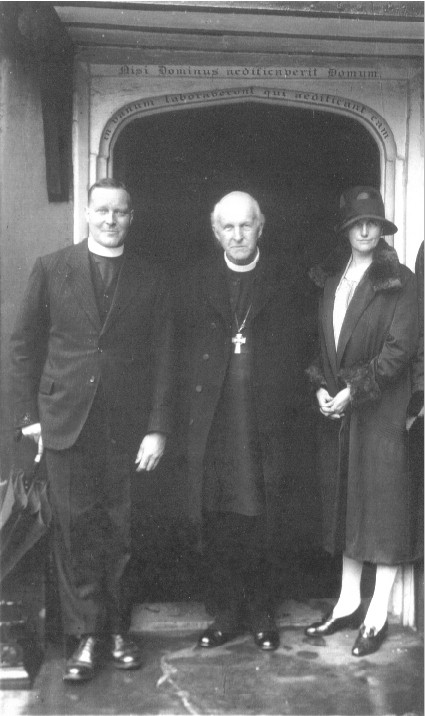
Church House Cricket Club: Top 1910; below 1920.
Canon
Blackburne with Archbishop of Canterbury, Cosmo Lang.
Cosmo
Lang is widely regarded as having been the last really wise, uniting
and Authoritarian Archbishop in the Church of England. Since his
death the CofE has
unquestionably been on a downward spiral, and since the 1960's this has
been on an exponential curve.
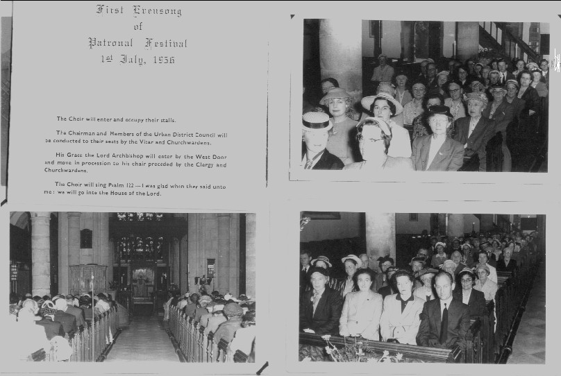
Once upon a time the church could boast a reasonable sized congregation. These glory days can return, with serious Mission & Outreach to the people of the town over a long period. If the destructive vandalism of furnishings and doctrine by the modernisers is not prevented the jewl in Ashford's crown will be lost forever.

The Parish Church showing the Clergy House and lovely old premises of Hall the Ironmongers before demolition

In the Crothall Room 2003 - The late Mr Tom Hall (former Archivist who handed the job over to Mr C.J. Cooper [standing]) Also pictured is Mrs Hall, and Mr Wilf Giles who had lived in Ashford all his life (for 94 years) and seen the once lovely old town change beyond recognition. Mr Giles is now (Nov 09) in a Nursing Home outside Ashford.
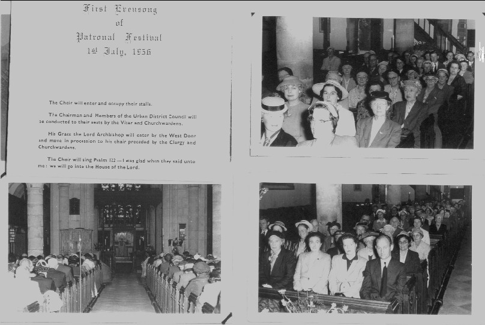
Once upon a time the church could boast a reasonable sized congregation. These glory days can return, with serious Mission & Outreach to the people of the town over a long period. If the destructive vandalism of furnishings and doctrine by the modernisers is not prevented the jewl in Ashford's crown will be lost forever.
The Parish Church showing the Clergy House and lovely old premises of Hall the Ironmongers before demolition
In the Crothall Room 2003 - The late Mr Tom Hall (former Archivist who handed the job over to Mr C.J. Cooper [standing]) Also pictured is Mrs Hall, and Mr Wilf Giles who had lived in Ashford all his life (for 94 years) and seen the once lovely old town change beyond recognition. Mr Giles is now (Nov 09) in a Nursing Home outside Ashford.